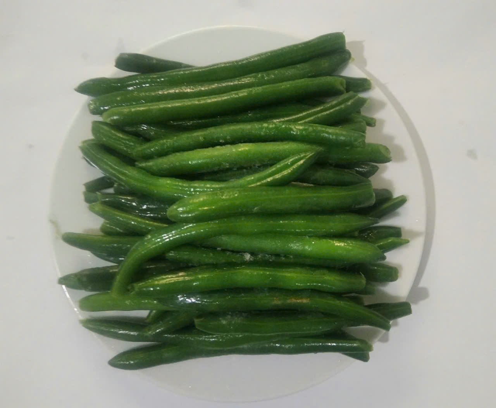
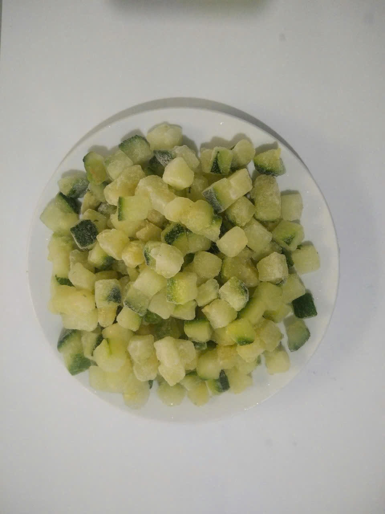
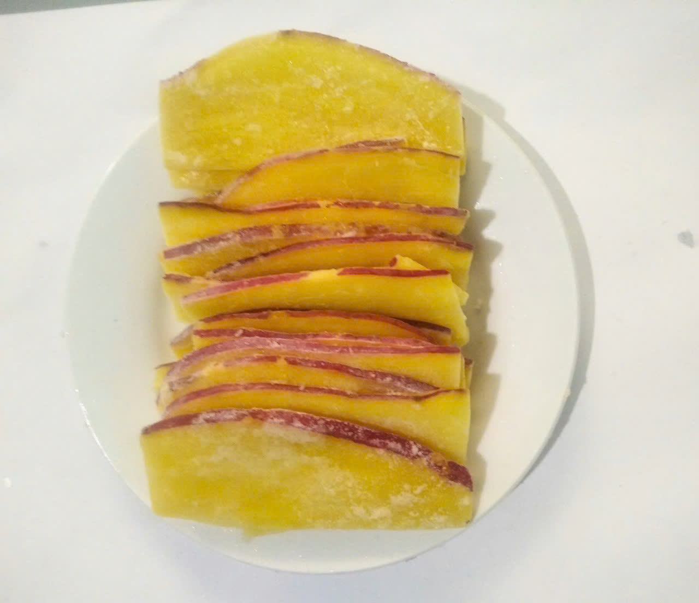
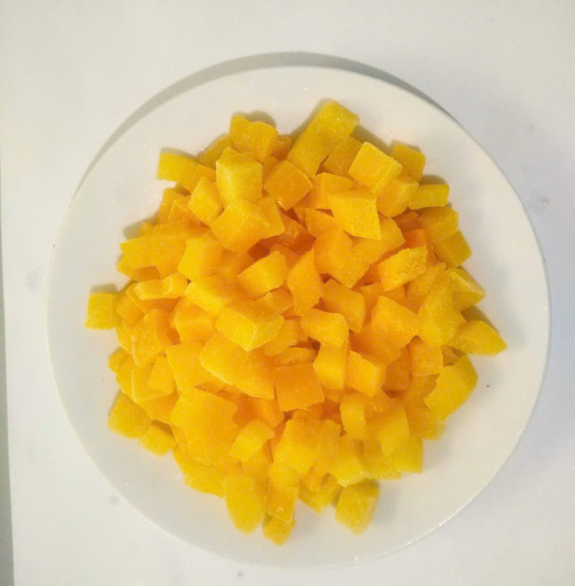
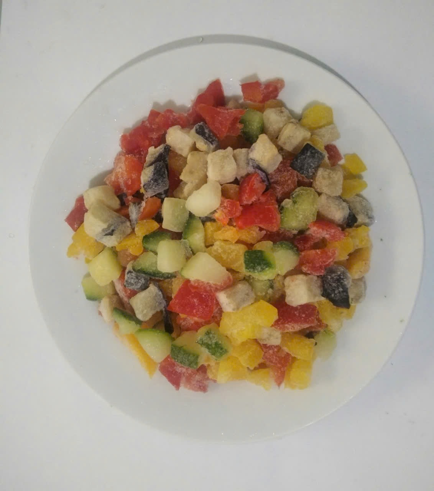
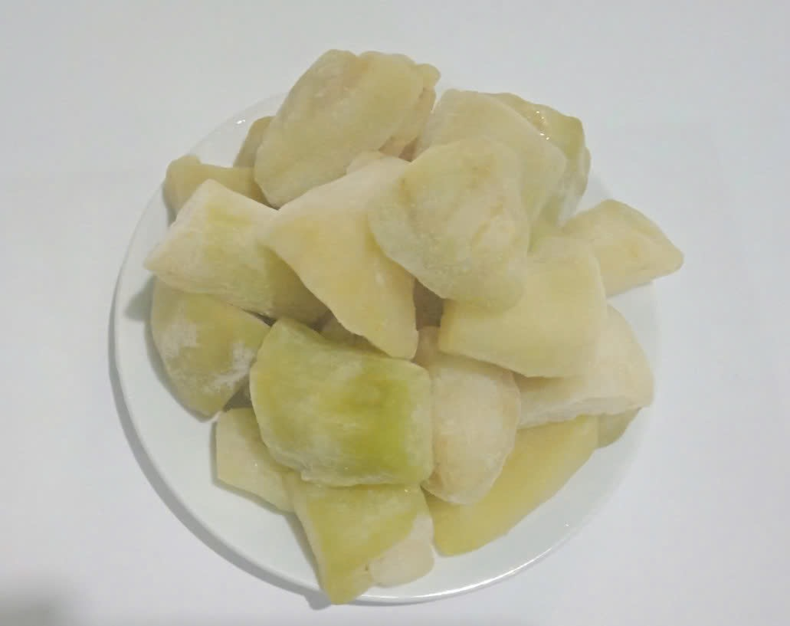
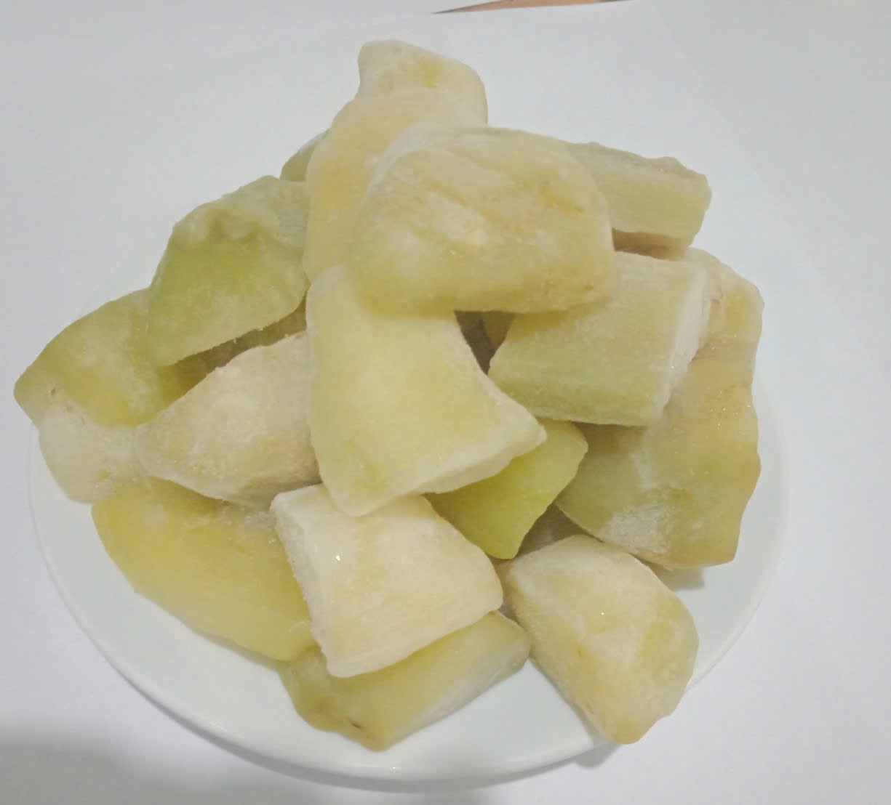
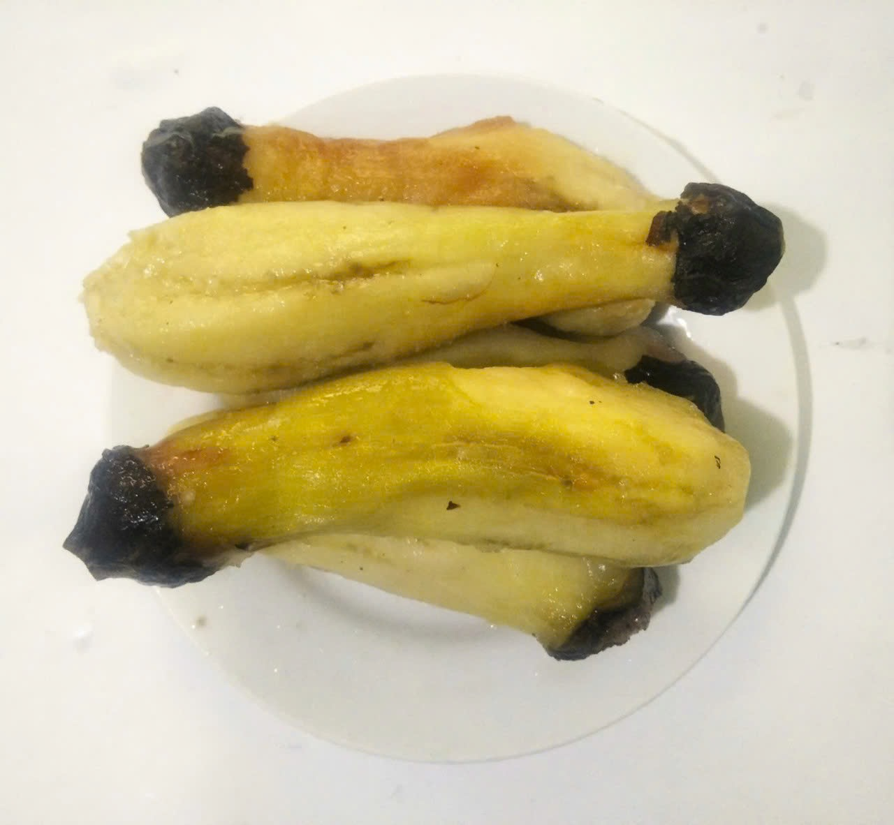

冷凍IQF野菜・果実
収穫後すぐに加工し、IQF（個体急冷）で一粒ごとに凍結。風味・栄養・色合いを保ち、使いたい分だけ取り出せます。下ごしらえ不要。日本・韓国・EU・ASEANの食品企業に安定供給とトレーサビリティでお応えします。
- 対応品目さつまいも、オクラ、ズッキーニ、ナス、パプリカ、ミックスベジタブル、マンゴー、りんご、メロン、バナナ ほか
- カットホール／スライス／ダイス／乱切り
- 加工ブランチング、衣付け（天ぷら用）、素凍り
- 冷凍IQF・個体急冷 Tunnel Freezer
- 規格1kg × 10箱／カートン、その他OEM対応
- 保冷−18℃以下・輸出コンテナ一貫コールドチェーン
- 認証HACCP / ISO 22000 / EU認可（DL.179）

インゲン豆（ホール・ボイル）IQF・個体急冷

オクラ衣付け（天ぷら用）付加価値加工・HACCP

ズッキーニ・スライスカット均一・色残り良好

ズッキーニ・ダイス10–12mm・スープ・炒め物用

マンゴー・スライス熱帯果実IQF

マンゴー・ダイススムージー・ヨーグルト用

ミックスフルーツ・スライスOEM配合対応

ミックスフルーツ・ダイスデザート・ベーカリー用

りんご・くし形解凍後の形態維持

メロン・カット高糖度・自然な香り

バナナ・ホールスムージー・製菓向け